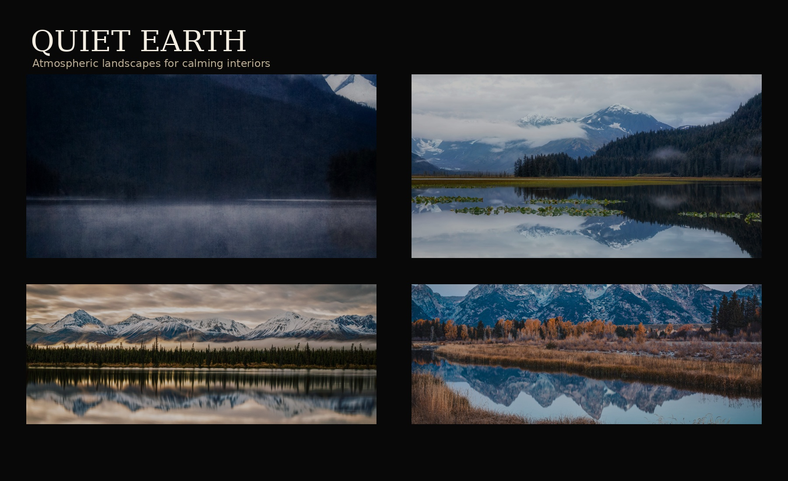
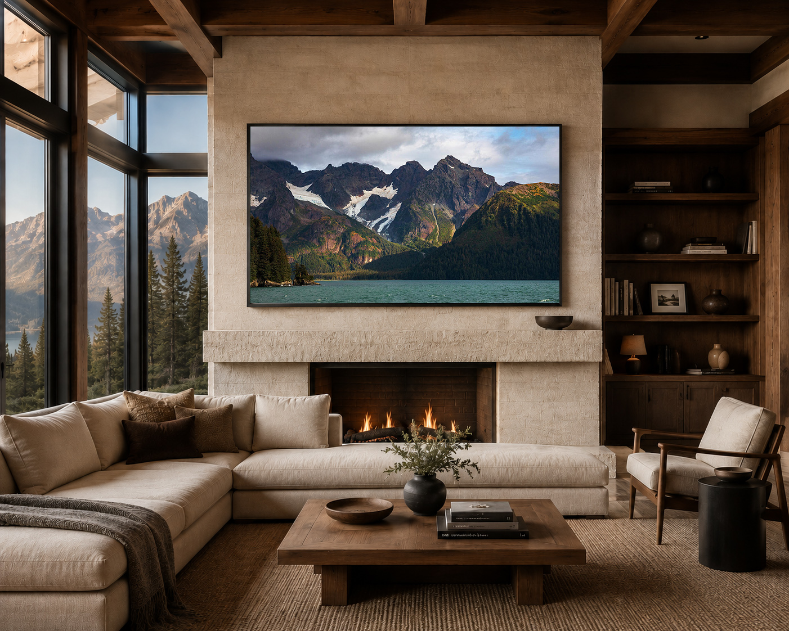
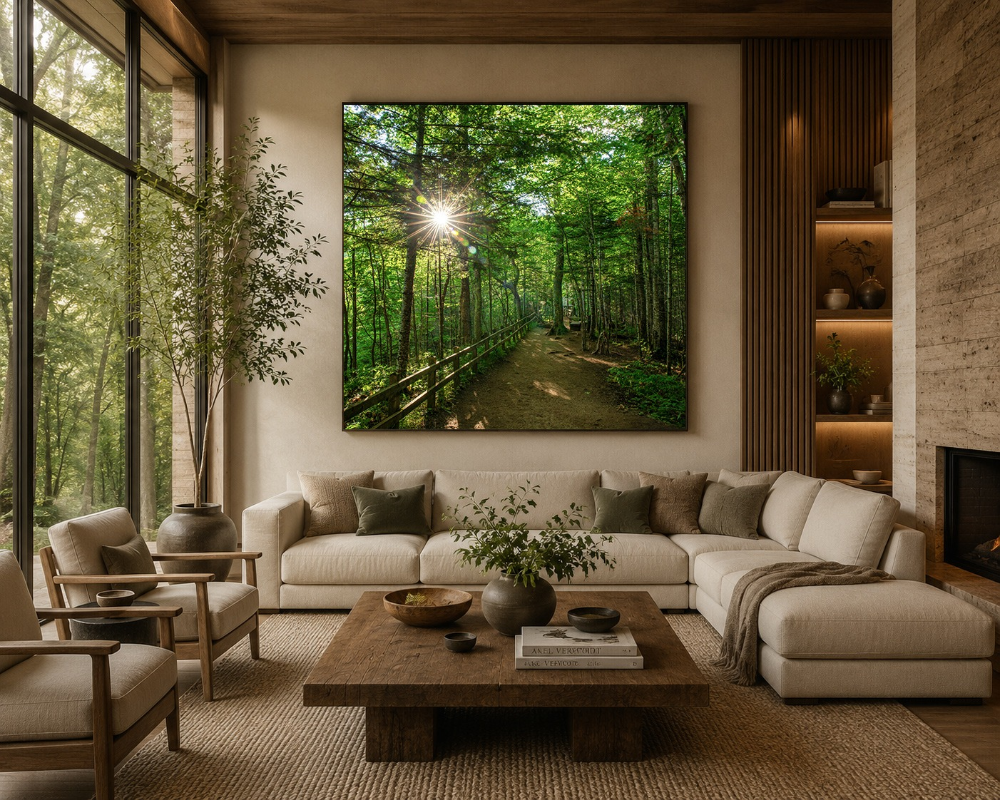

Five collection directions for refined interiors.
These are the main curated nature photography collections for residential, hospitality, wellness, and design-focused spaces.

Quiet Earth
Muted landscapes, still water, mountain atmosphere, and grounded natural tones for calming residential, wellness, and hospitality interiors.
View Collection
Coastal Atmosphere
Moody Oregon Coast photography featuring sea stacks, fog, monochrome shoreline studies, and atmospheric coastal imagery for boutique hospitality and elevated coastal interiors.
View Collection
Mountain Light
Atmospheric mountain photography featuring alpine landscapes, dramatic peaks, expansive wilderness scenes, and elevated natural light designed for statement interiors and modern mountain-inspired spaces.
View Collection
Forest Light
Atmospheric forest photography featuring woodland trails, filtered morning light, immersive green landscapes, and calming natural scenes designed for wellness-focused interiors and grounded modern environments.
View Collection.jpg)
Monochrome Stillness
Restrained black and white landscape photography featuring mist, reflection, quiet pathways, and mountain atmosphere for healthcare, wellness, hospitality, executive, and refined residential interiors.
View Collection